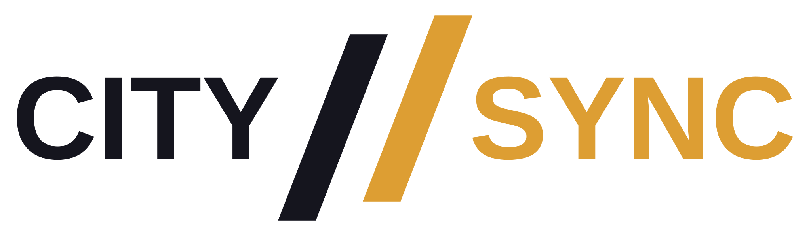
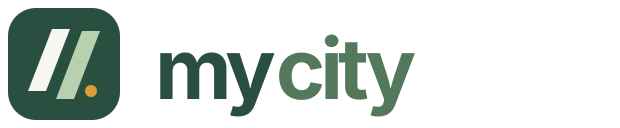
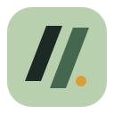
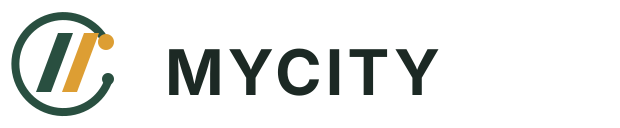
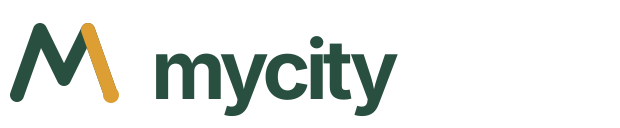

01 · Closest to the company mark
Twin streets
Wordmark and app icon
Keeps the paired slash almost intact. Forest green ties it to the product, while the gold stroke preserves a direct connection to City/Sync.
Six ways to give the volunteer app its own name, from close relatives of the City/Sync mark to broader ideas about movement, neighborhoods, and welcome.

Starting point. The existing company logo uses two diagonal strokes and a dark-and-gold palette. These concepts treat the strokes as a recognizable link to the parent brand while making MyCity legible as a separate app.
Wordmark and app icon
Keeps the paired slash almost intact. Forest green ties it to the product, while the gold stroke preserves a direct connection to City/Sync.


Wordmark and app icon
Places the two strokes inside a rounded tile made for phone home screens. The gold point suggests a local place or next step.

Wordmark and app icon
An open circle frames the inherited strokes as shared space. Two points make the mark feel like people or places joining a network.

Wordmark and app icon
A continuous route forms an M, ending at a gold destination. It makes discovering opportunities and moving into action the core idea.
Wordmark and app icon
A small street grid reads as a C, with a gold point marking a local place. It emphasizes the city as a collection of real neighborhoods.

Wordmark and app icon
A path leads through an open civic doorway. The serif wordmark lends warmth and permanence, positioning the app as an invitation to participate.
These are exploratory vector concepts. The lettering remains editable text in the SVG files; a final production logo should have its lettering outlined after you choose a direction.